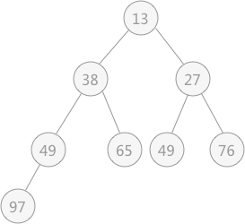
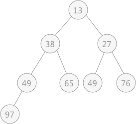

堆排序算法C语言详解
在学习堆排序之前，首先需要了解堆的含义：在含有 n 个元素的序列中，如果序列中的元素满足下面其中一种关系时，此序列可以称之为堆。
对于堆的定义也可以使用完全二叉树来解释，因为在完全二叉树中第 i 个结点的左孩子恰好是第 2i 个结点，右孩子恰好是 2i+1 个结点。如果该序列可以被称为堆，则使用该序列构建的完全二叉树中，每个根结点的值都必须不小于（或者不大于）左右孩子结点的值。
以无序表

图 3 无序表对应的堆
堆排序过程的代码实现需要解决两个问题：

此时由于结点 97 比左右孩子结点的值都大，破坏了堆的结构，所以需要进行调整：首先以 堆顶元素 97 同左右子树比较，同值最小的结点交换位置，即 27 和 97 交换位置：

由于替代之后破坏了根结点右子树的堆结构，所以需要进行和上述一样的调整，即令 97 同 49 进行交换位置：
通过上述的调整，之前被破坏的堆结构又重新建立。从根结点到叶子结点的整个调整的过程，被称为“筛选”。
解决第一个问题使用的就是不断筛选的过程，如下图所示，无序表
在对上图做筛选工作时，规律是从底层结点开始，一直筛选到根结点。对于具有 n 个结点的完全二叉树，筛选工作开始的结点为第 ⌊n/2⌋个结点（此结点后序都是叶子结点，无需筛选）。
所以，对于有 9 个结点的完全二叉树，筛选工作从第 4 个结点 97 开始，由于 97 > 49 ,所以需要相互交换，交换后如下图所示：
然后再筛选第 3 个结点 65 ，由于 65 比左右孩子结点都大，则选择一个最小的同 65 进行交换，交换后的结果为：
然后筛选第 2 个结点，由于其符合要求，所以不用筛选；最后筛选根结点 49 ，同 13 进行交换，交换后的结果为：
交换后，发现破坏了其右子树堆的结构，所以还需要调整，最终调整后的结果为：
所以实现堆排序的完整代码为：
- ki ≤ k2i 且 ki ≤ k2i+1（在 n 个记录的范围内，第 i 个关键字的值小于第 2*i 个关键字，同时也小于第 2*i+1 个关键字）
- ki ≥ k2i 且 ki ≥ k2i+1（在 n 个记录的范围内，第 i 个关键字的值大于第 2*i 个关键字，同时也大于第 2*i+1 个关键字）
对于堆的定义也可以使用完全二叉树来解释，因为在完全二叉树中第 i 个结点的左孩子恰好是第 2i 个结点，右孩子恰好是 2i+1 个结点。如果该序列可以被称为堆，则使用该序列构建的完全二叉树中，每个根结点的值都必须不小于（或者不大于）左右孩子结点的值。
以无序表
{49，38，65，97，76，13，27，49}来讲，其对应的堆用完全二叉树来表示为：

图 3 无序表对应的堆
通过将无序表转化为堆，可以直接找到表中最大值或者最小值，然后将其提取出来，令剩余的记录再重建一个堆，取出次大值或者次小值，如此反复执行就可以得到一个有序序列，此过程为堆排序。提示：堆用完全二叉树表示时，其表示方法不唯一，但是可以确定的是树的根结点要么是无序表中的最小值，要么是最大值。
堆排序过程的代码实现需要解决两个问题：
- 如何将得到的无序序列转化为一个堆？
- 在输出堆顶元素之后（完全二叉树的树根结点），如何调整剩余元素构建一个新的堆？
解决第一个问题使用的就是不断筛选的过程，如下图所示，无序表
{49，38，65，97，76，13，27，49}初步建立的完全二叉树，如下图所示：
所以，对于有 9 个结点的完全二叉树，筛选工作从第 4 个结点 97 开始，由于 97 > 49 ,所以需要相互交换，交换后如下图所示：
#include <stdio.h>
#include <stdlib.h>
#define MAX 9
//单个记录的结构体
typedef struct {
int key;
}SqNote;
//记录表的结构体
typedef struct {
SqNote r[MAX];
int length;
}SqList;
//将以 r[s]为根结点的子树构成堆，堆中每个根结点的值都比其孩子结点的值大
void HeapAdjust(SqList * H,int s,int m){
SqNote rc=H->r[s];//先对操作位置上的结点数据进行保存，放置后序移动元素丢失。
//对于第 s 个结点，筛选一直到叶子结点结束
for (int j=2*s; j<=m; j*=2) {
//找到值最大的孩子结点
if (j+1<m && (H->r[j].key<H->r[j+1].key)) {
j++;
}
//如果当前结点比最大的孩子结点的值还大，则不需要对此结点进行筛选，直接略过
if (!(rc.key<H->r[j].key)) {
break;
}
//如果当前结点的值比孩子结点中最大的值小，则将最大的值移至该结点，由于 rc 记录着该结点的值，所以该结点的值不会丢失
H->r[s]=H->r[j];
s=j;//s相当于指针的作用，指向其孩子结点，继续进行筛选
}
H->r[s]=rc;//最终需将rc的值添加到正确的位置
}
//交换两个记录的位置
void swap(SqNote *a,SqNote *b){
int key=a->key;
a->key=b->key;
b->key=key;
}
void HeapSort(SqList *H){
//构建堆的过程
for (int i=H->length/2; i>0; i--) {
//对于有孩子结点的根结点进行筛选
HeapAdjust(H, i, H->length);
}
//通过不断地筛选出最大值，同时不断地进行筛选剩余元素
for (int i=H->length; i>1; i--) {
//交换过程，即为将选出的最大值进行保存大表的最后，同时用最后位置上的元素进行替换，为下一次筛选做准备
swap(&(H->r[1]), &(H->r[i]));
//进行筛选次最大值的工作
HeapAdjust(H, 1, i-1);
}
}
int main() {
SqList * L=(SqList*)malloc(sizeof(SqList));
L->length=8;
L->r[1].key=49;
L->r[2].key=38;
L->r[3].key=65;
L->r[4].key=97;
L->r[5].key=76;
L->r[6].key=13;
L->r[7].key=27;
L->r[8].key=49;
HeapSort(L);
for (int i=1; i<=L->length; i++) {
printf("%d ",L->r[i].key);
}
return 0;
}
运行结果为：
13 27 38 49 49 65 76 97
堆排序在最坏的情况下，其时间复杂度仍为提示:代码中为了体现构建堆和输出堆顶元素后重建堆的过程，堆在构建过程中，采用的是堆的第二种关系，即父亲结点的值比孩子结点的值大；重建堆的过程也是如此。
O(nlogn)。这是相对于快速排序的优点所在。同时堆排序相对于树形选择排序，其只需要一个用于记录交换（rc）的辅助存储空间，比树形选择排序的运行空间更小。关注公众号「站长严长生」，在手机上阅读所有教程，随时随地都能学习。内含一款搜索神器，免费下载全网书籍和视频。

微信扫码关注公众号